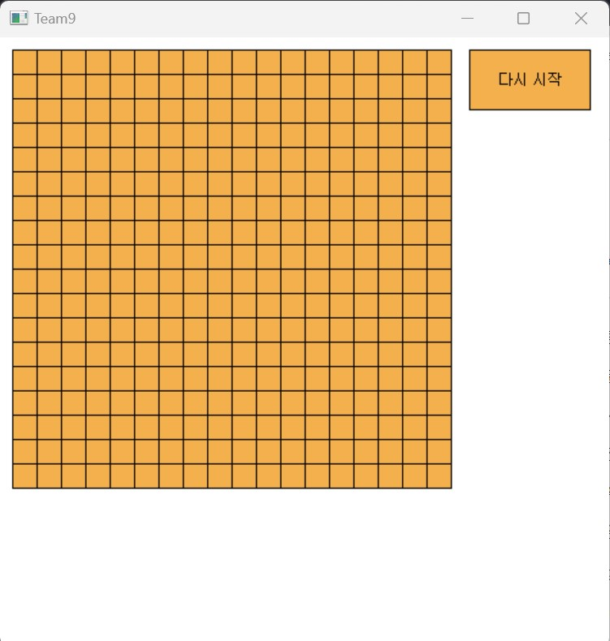

This concave program is a GUI environment, unlike the usual C language console environment. It was created using a private header file called EasyWin32. It is a program that compensates for the error of winning even when six existing stones are placed.
 Back to Projects